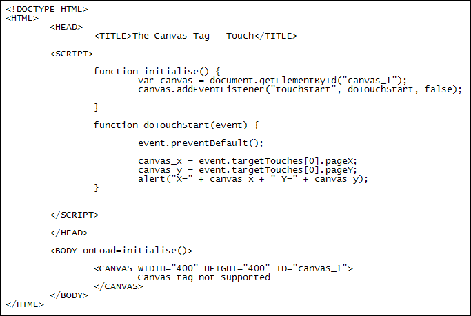
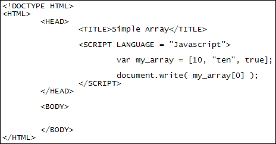
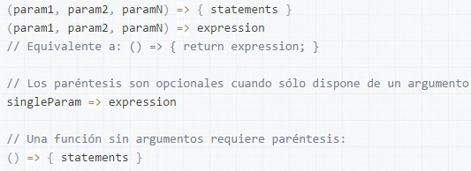

AddEventListener
AddEventListener() records an event on a specific target. The specific object can be a simple element in a file, the same document, a window, or an XMLHttpRequest.
Array
The declaration of an array is done in the same way that any variable is declared: varArrayName; The array acquires such a condition when the variable is initialized as an array, either as an array with an initial content or as an empty array: Example of an array:
Arrow function
The arrow function expression has a shorter syntax compared to the conventional function expression and does not link its own this, arguments, super, or new.target. The arrow function is always anonymous. These functions are non-method-related functions and can not be used as constructors. Example:
